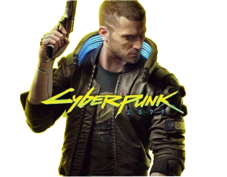
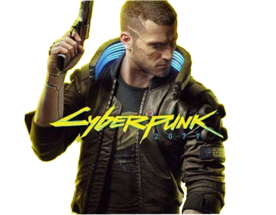
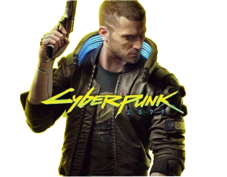
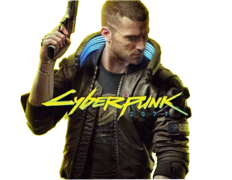

Механика боя
Механика рукопашного боя в Cyberpunk 2077 довольно забавная; Несколько пуль достаточно, чтобы убить игрока
Механика и концовки
 

Механика рукопашного боя в Cyberpunk 2077 довольно забавная; Несколько пуль достаточно, чтобы убить игрока